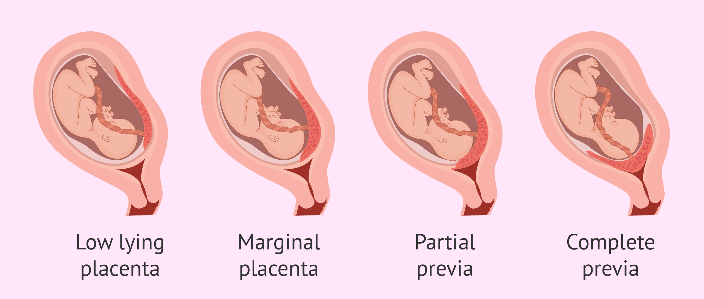
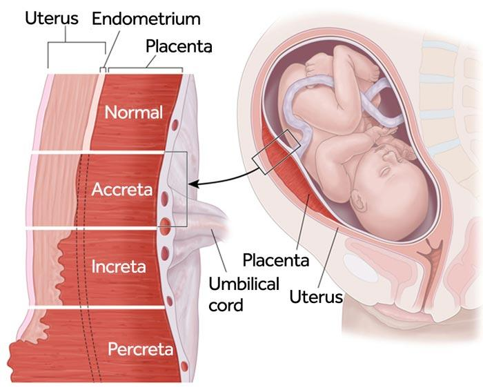

PLACENTA PREVIA
Frequency / Exam Importance
- Placenta previa happens a lot in recent exams.
Two Areas in the Exam
- Low-lying placenta
- Placenta previa
Definitions
- Low-lying placenta: Placenta closer than 2 cm to the internal os.
- Placenta previa: Placenta lies directly over the os; covers it partially or completely.

Placenta Accreta
- Placenta goes deep into the myometrium.
- Causes massive bleeding after delivery.
- Hard to remove.
- Not discussing increta/percreta.
- Must always consider placenta accreta.

Risk Factors
- Previous cesarean section (most important).
- Previous cesarean also increases accreta risk.
- Smoking.
- Multiple pregnancy.
- Multi-parity.
- Advanced maternal age.
- Previous surgical termination.
- Surgeries and scars including fibroid surgery.
- Anything causing uterine scars increases risk.
Clinical Features
- Painless bleeding.
- Vaginal bleeding, usually bright red, often significant.
- No pain.
- Fetal malpresentation is common.
- Presenting part is high and mobile.
Why We Worry
- Need planning for mode of birth.
- NVD(Normal Vaginal Delivery) is NOT allowed in placenta previa.
- Must do cesarean section.
- Concern is bleeding.
- Plan early delivery; do not wait until 38–40 weeks.
MORPHOLOGY SCAN
- First concern point: 18–20 weeks.
- Check placenta position.
Two Outcomes
- Placenta previa: OK → proceed.
- Low-lying placenta: Very common at 18–20 weeks.
Management for Low-lying Placenta
- Tell her to wait.
- Uterus grows; many placentas move away from os.
Ultrasound Request Form
- Always note previous cesarean section.
- Radiologist needs to look for placenta accreta (depth of placenta).
SUMMARY OF MANAGEMENT
Placenta Previa (Grade 3/4)
- Not going to move.
- Re-scan closer to delivery.
- If still major previa → plan C-section at 37 weeks.
Low-lying Placenta
- Re-scan at 34-36 weeks
- Most will resolve.
- If still low-lying → plan C-section at 39 weeks.
COUNSELING (IF PLACENTA REMAINS LOW IN THIRD TRIMESTER)
- Do full blood examination and iron studies (prepare for bleeding).
- Discuss risk of bleeding.
- Discuss increased risk of preterm labor and delivery.
- Advise immediate presentation to nearest delivery suite if bleeding or contractions occur.
- If contractions at 35 weeks → come to hospital immediately.
- Placenta previa: C-section at 37 weeks.
- Low-lying placenta persisting: C-section at 39 weeks.
Resolution
- 9/10 low-lying placentas will no longer be low-lying near term.
Trial of Labor
- Low-lying placenta is not a contraindication to trial of labor.
- Patient-centered approach.
- Must discuss risks.
- Placenta previa covering os completely → no NVD at all.
Red Flag
- Any bleeding or contractions → attend immediately.
PLACENTA ACCRETA CONSIDERATION
- High suspicion if placenta previa + previous cesarean section.
- May need extra ultrasound or MRI.
- Must be flagged with level 6 service (ICU, urgent surgery capability).
PLAN OF CARE: PLACENTA PREVIA WITH BLEEDING
- If bleeding has stopped:
- May send home if no/minimal bleeding.
- Rural setting → discuss transfer to metropolitan service.
- May send home if no/minimal bleeding.
- Active bleeding:
- Admit or transfer to hospital with suitable neonatal unit.
- Admit or transfer to hospital with suitable neonatal unit.
- Counsel urgent hospital care if bleeding/contractions begin.
- Birth should occur in a unit with:
- Critical care
- Blood transfusion services
- NICU
ANTI-D
- Antepartum bleeding → worry about anti-D.
- Give anti-D to blood group negative ladies.
- Quantify mixing (Kleihauer test).
- Dose depends on amount of bleeding.
ULTRASOUND
- Every 2–3 weeks to check placenta location.
- Photograph bleeding event.
STEROIDS
- Give steroids at time of bleed.
- Not indicated after 37 weeks.
- PROM cutoff: 35 weeks.
- Placenta previa: 37 weeks considered.
- Cesarean section increases need to consider steroids.
- Vaginal delivery pressure helps lungs; cesarean does not.
HOSPITAL STAY
- Ongoing bleeding → remain in hospital.
- No bleeding for 24 hours → can discharge.
- Discharge timing depends on individual factors.
STEM SUMMARY / KEY POINTS
Your next patient is a 30 year old lady who is 34 weeks pregnant and has presented to the Emergency Department due to a vaginal bleeding. The bleeding has now stopped and resolved.
• On her Transvaginal ultrasound, you have diagnosed her of a placenta previa grade 4 / Completely covering the cervical os.
• She has a history of C/S in her previous pregnancy. Her blood group is O Negative.
• You are in a rural hospital which is 250km away from the tertiary hospital. Your centre is a level 4 hospital with Adult ICU.
What the stem is putting out as key points
- Talk about placenta accreta – “Let’s go check for placenta accreta.”
- Negative blood group – Must talk about kleihaur test and Anti-D.
- Rural hospital – Not a patient to keep in a rural hospital. Needs a Level 6 metro hospital.
- Do NOT discharge her home – Massive bleeding / contractions risk.
- Do NOT keep her 24 hours in the rural hospital as a plan – She needs to go to the metro now.
TASKS
- Explain the ultrasound to the patient
- Explain other tests / investigations you need to arrange for
- Explain the diagnosis to the patient
- Explain the management plan till the end of pregnancy
EXPLAINING THE ULTRASOUND
How to start
- ID check
- Introduce yourself
- Sit down
- Start with an open-ended question:
- “How are you feeling, Jane?”
- “Can you tell me what has happened so far?”
- “How are you feeling, Jane?”
Patient’s opening statement
- “Doctor I am pregnant 35 weeks and I had bleeding today. It has stopped now but i rushed to hospital as soon as i could. But i am very worried about results of my scan.”
Explaining the scan
“I have your results, lets go through it together.”
- Start with normal findings first:
- Amount of fluid around baby is normal
- Heartbeat normal
- Any other normal info from the scan
Explain placenta
- Placenta = “a tissue or bridge in the womb that connects the baby to your womb”
- Normally it is located at top of the womb
- In your case:
- It has Formed on the bottom of your womb
- Completely covering the opening/outlet of the womb
- “We call this condition placenta previa”
- It has Formed on the bottom of your womb
Our Biggest concern is:
- “Massive or severe bleeding at the time of delivery”
Reason in her case
- “in your case, the reason is Most likely your previous cesarean section”
- Scar leads to this condition
- Other possible risk factors only if present in stem like smoking, increas parity, higher maternal age, previous surgeries on womb.
OTHER TESTS / INVESTIGATIONS
Top key investigation : most important test we need to do is Kleihaur Test (Most important. Will not pass if not mentioned.)
Explanation
- Blood group is negative
- In the event of bleeding, your blood can mix with baby’s blood
- And this Can create problems for future pregnancies
- Test quantifies the amount of bleeding
- Helps decide dose of Anti-D
- Purpose: “Anti D Prevent your body from becoming sensitive to positive blood groups”
Full blood examination
- Check hemoglobin
- Check iron studies and ferritin
CTG
- “To monitor the heart rate of the baby”
- “To check fetal wellbeing or rule out distress”
DIAGNOSIS
- “You have a condition called placenta previa”
- Placenta is covering the opening/outlet of the womb
Implication
- “this Makes it impossible to plan a vaginal delivery”
Risks
- Severe bleeding
- Need for blood transfusions
- Some Severe versions may need surgical removal of the uterus.
MANAGEMENT PLAN
BOX 1: DISPOSITION DECISION
- Must decide: Not home. Not stay here. Transfer.
- Reason:
- As there is Risk of severe bleeding
- And a risk that we May need early delivery.
- Rural hospital cannot provide needed services
Plan
- Transfer to a more equipped hospital (Level 6 metro) , And that is Done in preparation for the complications of this condition
- Severe bleeding → transfusions
- Urgent surgery
- Preterm baby → NICU
24-HOUR MONITORING
- U will Stay in hospital for at least 24 hours to be Monitored and make sure that:
- Bleeding stops and stays stopped
- No contractions
- Monitor baby
If bleeding stops
- We Can send u home BUT
- Prefer her to stay close to metropolitan hospital
- Not go back far into rural area
BOX 2: DELIVERY PLAN
- Method: our plan is Cesarean section
- Timing: Plan at 37 weeks
- Before that monitor for:
- Any bleeding, pain, contractions → come back urgently
- Might need earlier cesarean
Must set red flags (not pass without this)
BOX 3: STEROIDS
- She is 34 weeks
- “We will give you an injection of corticosteroids”
- Helps “speed up maturity of lungs”
- Given in case we need to deliver earlier than 37 weeks
BOX 4: ANTI-D
- “as I already told about anti D, We need to give you that injection”
- Prevent body becoming sensitive to positive blood groups
- Dose depends on Kleihaur test results
- Will definitely give Anti-D
BOX 5: REPEATED ULTRASOUNDS
- We will repeat USG To check baby and placenta
- I will Ask radiologist to check for a condition called placenta accreta.
- In this condition, placenta Can grow into cesarean scar
- Can grow deep into wall of womb
- Creates extra problems
REASONS FOR FAILURE
- Failure to make a final plan (discharging her early)
- Not mentioning Kleihaur test and Anti-D
- Critical error
- Will not pass without it